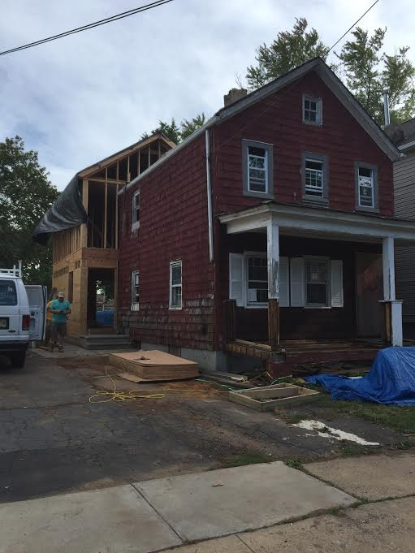

-
First on the books job. November of 2014 I started working at The Ivy League Bar & Grill. It was a small family opened resteraunt about 2 miles from the house I grew up in. I worked there for about 10 months. I do give this place A lot of credit tho, this was the first place my patience was tested and showed even the easiest work environments have negative aspects to them too ;)
1 November 2014 -
Next came East Coast Fireplace Co. in manalapan. This was my firswt job I got after graduating high school. I started in August and had to take a periodic break to try and pursue my goal at the time to join the ironworking union in NYC.
3 August 2015 -

NYC We Made It....
1 January 2016 (Tuesday) -
"Today's the day". I thought. That day I thought I was whwere I was destined to be. I no longer would be searching for a career again. I BECAME AN IRONWORKER
1 January 2016(Tuesday) -
Ironworking didn't workout. Well my source that got me the position didn't work out, that is. Anyways during the next few months I was back working/ living with my father. We started renovating a house built back in the 1800's. I guess you could say the place was a shit hole. Initially the build was just supposed to add on an addition, however it turned into a demo rebuild. We re-framed the existing building, and then continued to add the new frame for the addition. It practically tripled the initial square footage.
27 May 2016/div>Rahway Rebuild
27 September 2016(Thursday)It's a new year and time for a new start. Luckily I have the greatest cousin anybody could ask for. At this time of my life my wrist needed to be re-broke and needed a screw inserted to fix the break. With that being said construction was out of the picture for quite some time. With that variable being determined... my cousin Rob strapped my ass in the web development boat... and my ass was on-board to the white collar sea!!WITH NO TICKET TO RETURN
1 January 20172017